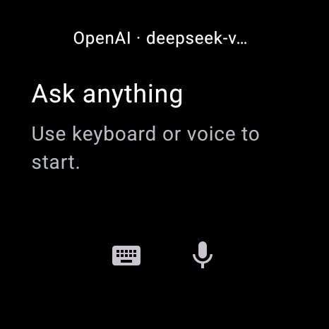
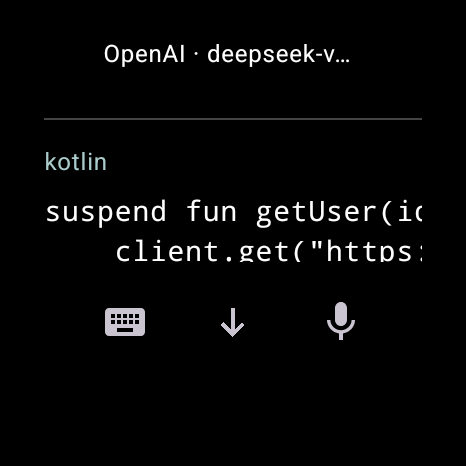

Every token, inside 466 pixels.
NiroWear is a direct bring-your-own-key AI chat client for Wear OS. Prompts leave your watch straight to OpenAI Responses, Anthropic Messages, Gemini SSE, or any compatible endpoint. Replies parse into lazy headings, lists, horizontal code chunks, JLaTeXMath formulas, and vertical table records without cutting long answers.
- Unit suite
- 316 / 51tests / suites, 0 fail
- Release boot
- 549 msv0.3.0 cold AVD med
- Watch scroll
- 1.18%761 frames Watch 2 HW
- Locale parity
- 127EN / ID matching keys

466 px dial: 314 px text chord (28-34 chars/line) inside the 96 px safe bezel inset.
The Answer Bench & RenderUnit Inspector
Edit Markdown live to inspect the exact semantic blocks and lazy item decomposition that NiroWear applies on Watch OS. Tables emit one item per row with repeated column headers; code fences split into 24-line chunks; refused macros degrade cleanly to readable source.
Ready.
Scrollable inside safe band.
Clipped at viewport fold.
Interruption Safety & Linear Edit Contract
Tokens coalesce to one parse per frame through StreamParse. Scrolling up stops auto-follow and surfaces Latest ↓. Stop cancels the OkHttp call and keeps received tokens; missing a terminal SSE event triggers a failure row rather than silent truncation.
Press Stream answer to watch live frame coalescing, scroll upward inside the watch dial to detach auto-follow, or press Cut connection to simulate a mid-stream socket EOF without a terminal event.
Linear Edit Transaction (ChatDao.edit in Room)
Editing an earlier user turn never creates branches: it runs replaceUser + truncate(id > edited) in one atomic SQLite transaction, then streams a single new continuation.
Subsystem Architecture & Memory Bounds
Built with Kotlin, Jetpack Compose for Wear OS Material 3, Room v3, DataStore Preferences, OkHttp, kotlinx.serialization, CommonMark, ZXing, and JLaTeXMath. Select any component below to inspect its exact class responsibilities and measured caps.
Wear Compose Material 3 UI
Standalone ComponentActivity enforcing adjustResize, edge-to-edge IME inset consumption for targetSdk 37, full TextFieldValue selection/composition retention, and enforced TalkBack traversal order (Menu -> Reader -> Footer).
- Files
MainActivity.kt,ProviderScreen.kt- Key invariant
- Every interactive control holds >= 48 dp (96 px @ 320 dpi) bounds; Menu and Footer declare explicit traversal indices without floating above the reader.
- Failure / fallback
- All 11 stored failure tokens resolve in English and Indonesian at draw time regardless of system updates.
Four Adapters & Wire-Event Classification
Model ID strings never pick the protocol. Each provider profile chooses an explicit wire adapter that checks HTTP headers, structured error payloads, and required SSE completion events.
- Endpoint
- Responses API ·
POST {base}/responses - Auth header
Authorization: Bearer <key>- System mapping
- Top-level
instructionsparameter withstore: false - Terminal event
response.completedverified against accumulated text- Phase sidecar
openai_phases(Room v2) preserves item boundaries only when profile + model + baseUrl match.
- Endpoint
- Messages API ·
POST {base}/messages - Auth header
x-api-key: <key>plusanthropic-version: 2026-10-21- System mapping
- Top-level
systemfield; adjacent same-role turns merged before dispatch - Terminal event
message_stopwith verified stop reason (end_turncomplete;max_tokens/pause_turn/tool_usesurfaced as early truncation)- Token metadata
- Cached per endpoint + model lookup; safe fallback
4096discloses truncation if exceeded.
- Endpoint
- GenerateContent SSE ·
POST {base}/models/{model}:streamGenerateContent?alt=sse - Auth header
x-goog-api-key: <key>(strictly redacted from logs/URLs)- System mapping
systemInstructionobject with alternatinguser/modelcontents- Terminal event
finishReason: "STOP"required;MAX_TOKENSor other stop triggers failure/notice- Error taxonomy
- Inspects structured JSON
statusanddetails[].reasonbefore raw HTTP code.
- Endpoint
- Chat Completions ·
POST {base}/chat/completions - Auth header
Authorization: Bearer <key>- System mapping
- Leading
{"role":"system"}message - Terminal event
- Chunk carrying explicit
finish_reason: "stop";[DONE]alone without reason never suffices - Model entry
- Manual model ID typing stays open even if
GET /modelsfails or returns 404.
Keystore Encryption & Ephemeral Phone Pairing
API keys never pass through a relay server, never touch cloud backup (allowBackup="false"), and never populate back into editing fields. Long keys move from phone to watch over a 120-second single-use HTTPS session.
NFC Host Card Emulation
Arms NfcPairingService with Type 2 NDEF URI tag bytes only during the 120 s window. Requests outside an armed session answer APDU 6A82.
Integer-Scaled Watch QR
ZXing encodes the ephemeral capability URL onto pixel-aligned modules (330 px at 466 dial, 248 px at 384), verified back via PairingQrTest pixel decode.
LAN URL / Manual Watch Entry
Displays the short local https:// address on the dial for phones without camera/NFC, alongside full offline-capable manual key entry under FLAG_SECURE.
Layer 1 · Ephemeral ECDH P-256 Handshake
Browser form and watch derive a shared symmetric key via ephemeral P-256 ECDH using WebCrypto before any API key leaves the phone browser.
Actual Screens from the Round Dial
Uncropped PNG captures recorded against real endpoints and verified instrumentation cuts. Click or press Enter on any plate to open the accessible full-scale lightbox (Previous, Next, and Escape supported).





Measured Performance & Verification Ledger
Every figure comes verbatim from JUnit XML, Gradle reports, or adb timing/gfxinfo logs. Emulator SwiftShader runs and dated Xiaomi Watch 2 hardware runs stay separated.
| Subsystem | Scope | Verified result & artifact source |
|---|---|---|
| Release signing & static gate | CI / Host JVM | Signed v0.3.0 (versionCode 16, 3,779,197 B, SHA-256 d94a5af3755b1c3d86257525cd643042db4cf64d7f755cbcdcab5ea23e040ca2) built under CN=NiroWear Release after ktlintCheck (0 violations), testDebugUnitTest (316 tests / 51 suites, 0 fail, 1 opt-in live skipped), lintDebug (0 errors, 1 warning), and release notes check. |
| Wear OS 5 closeout gate | AVD 466 px | CI smoke 10/10 green (required check on main); closeout gate 11/11 classes (19/19 tests); signed v0.2.1 -> v0.3.0 cold upgrade 0 FATAL; cold launch 549 ms med, warm 37 ms med, first frame 365.993 ms med, PSS 30,836 KB. |
| 5,000-msg upgrade & torture scroll | AVD 466 px | Exact Room v2 schema (9ae11899...) with 200 chats / 5,000 rows migrated to v3 in 286.48 ms; 50 searches median 0.53 ms (P95 4.15 ms); History 18-swipe scroll 494 frames / 2.23% jank (P50 8 ms, P95 20 ms); 4,485 B torture fixture scroll 460 frames / 6.09% jank on SwiftShader debug. |
| i18n parity & accessibility | Host + AVD | 127 keys in values/strings.xml and values-in/strings.xml (0 missing, 0 extra); TalkBack traversal order Menu -> Reader -> Footer verified (TalkBackTraversalOrderTest); code block horizontal pan fade cue and 96 px targets verified. |
| Xiaomi Watch 2 (dated cuts) | Watch 2 HW | v0.2.1 (2026-11-16) cold 723 ms; debug 23efc01 (2026-11-17) cold 4375.5 ms (#65), Adreno scroll 761 frames (1.18% jank), 20-min stress +3.2 MB PSS at Thermal Status: 0, 38/45 instrumented classes + 4 teardown crashes tracked in #84 (replacing closed #50). Hardware checks skipped on v0.3.0. |
| Explicit open & policy boundaries | Open / Policy | Unverified on v0.3.0 hardware: battery drain %, thermal > status 0, TalkBack speaker audio, dictation accuracy, phone LAN certificate click-through (#28), and rotary absence (#47). Pre-upgrade v2 database injection into signed shipping release container stays blocked by allowBackup="false" and debuggable=false. |
Install NiroWear
Needs Wear OS 3+ (minSdk 30), 32- or 64-bit ARM, 3.6 MB of storage, and a provider key you own, typed on the watch or sent from a phone on the same Wi-Fi. No account, no relay, no server of ours.
Sideload the CI-signed release over ADB. Releases from 0.1.1 through 0.3.0 share CN=NiroWear Release and upgrade in place; 0.1.0 builds used CN=Android Debug and require uninstalling first.
adb install -r app-release.apk
versionCode 16 · v0.3.0 · 3,779,197 B · Android Keystore keys stay device-bound.
Compile with JDK 17+ and Android SDK 37. Local builds without signing environment variables emit app-release-unsigned.apk; debug builds match native LaTeX behavior.
git clone https://github.com/michaelxdips/NiroWear.git cd NiroWear ./gradlew :app:testDebugUnitTest :app:lintDebug :app:ktlintCheck :app:assembleDebug
Pair over local Wi-Fi using the wireless debugging port displayed on the watch.
adb pair 192.168.1.50:37123 adb connect 192.168.1.50:5555 adb install -r app-release.apk
Compare your downloaded APK SHA-256 digest and signer before installing:
sha256sum app-release.apk # Expected v0.3.0: d94a5af3755b1c3d86257525cd643042db4cf64d7f755cbcdcab5ea23e040ca2
- Why keep backup disabled?
- API keys are AES-256-GCM encrypted using a hardware/device-bound Android Keystore alias. Backing up ciphertext without the Keystore key produces undecryptable state on another watch, so
allowBackup="false"stays enforced. - Why store raw Markdown instead of parsed HTML or JSON?
- Keeping raw
USERandASSISTANTMarkdown in Roommessagesensures future parser and JLaTeXMath improvements upgrade historical chats without any SQLite migration. - Why do table rows repeat column headers?
- On a 28-character watch chord, multi-column grids squash headers and truncate numbers. Turning each table row into its own lazy vertical record keeps every cell crisp inside single-axis scrolling.
- Can compatible endpoints without
/modelsstill chat? - Yes. Discovery and credential configuration stay decoupled: manual model ID entry and Save work offline, behind captive portals, and against endpoints that omit
GET /models.